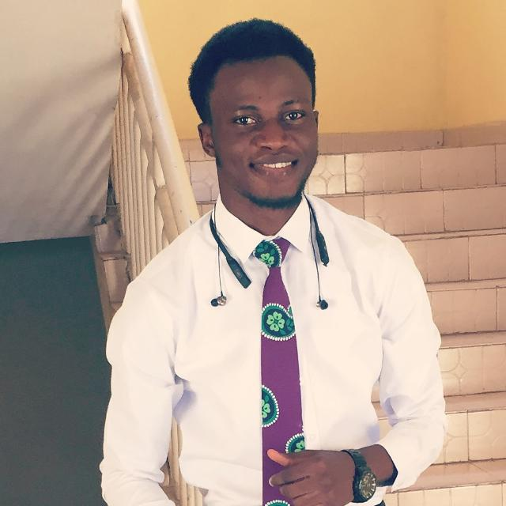

DARA ADENIJI
SUMMARY
- I am an astute Web Developer, really enthusiastic about innovations and developments in the tech space.
EDUCATION
Tertiary:
Institution: McPherson University | Seriki Sotayo | Ogun State | Nigeria.
Field | Degree: Technology | BSc. Computer Science.
Duration: October 2022 - 2026.
Secondary:
School: Smith International Baptist Academy | Ogbomosho | Oyo State | Nigeria.
Certification: WASSCE.
Duration: September 2008 - July 2014.
Primary:
School: Federal Staff Nursery and Primary School | Ilorin | Kwara | Nigeria.
Certification: First School Leaving Certificate.
Duration: September 2003 - July 2008.
WORK EXPERIENCE
Organisation: Care Ville Foundation | Abuja FCT Nigeria.
Designation: Academic Tutor.
Duration: August 2022 - September 2022
SKILLS
Problem-Solving.
Logical Thinking.
Communication.
Critical Thinking.
Calculations.
AWARDS/CERTIFICATIONS/ACHIEVEMENTS
Certificate of Completion; Full-stack Web Development Course, London App Brewery (2024).
Certificate of Completion; The Complete Python Pro Bootcamp, London App Brewery (2024).
Certificate of Inovation; Hostel Management System development project, New Horizons (2024).
Certificate Of Participation; REPHASE/RESHAPE Leadership Development Hub, Leaders' Quarters (2020).
Federal Scholarship Board Award; Federal Ministry of Education, Federal Republic of Nigeria (2019).
NNPC/Chevron JV National Scholarship Award; Chevron Nigeria Limited (2017).
Hobbies
Contact Me